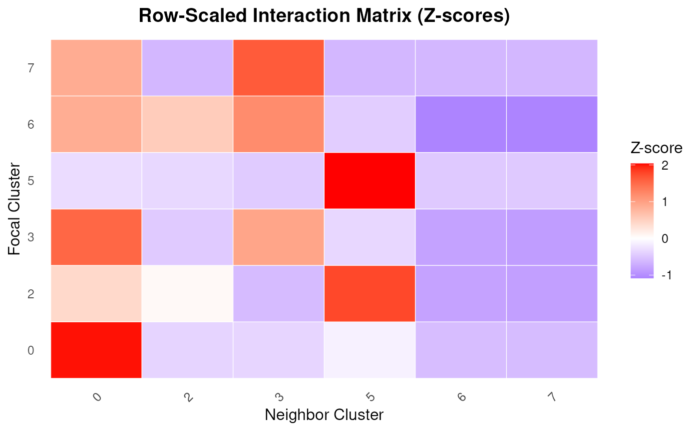

Plot a heatmap of a row-scaled spatial interaction matrix
Source:R/PlotInteractionMatrix.R
PlotInteractionMatrix.RdVisualizes a spatial interaction matrix using a heatmap, where rows represent focal clusters and columns represent neighbor clusters. Each row is scaled using z-scores to highlight relative enrichment patterns across neighbor types. This is useful for detecting spatial proximity patterns between cell populations.
Usage
PlotInteractionMatrix(
interaction_matrix = NULL,
low_color = "blue",
mid_color = "white",
high_color = "red",
angle_x_label = 45,
title = "Row-Scaled Interaction Matrix (Z-scores)"
)Arguments
- interaction_matrix
A numeric matrix with focal clusters as rows and neighbor clusters as columns. Typically the output from
ComputeSpatialInteractionMatrix().- low_color
Color representing low z-score values. Default is
"blue".- mid_color
Color representing the midpoint (z-score = 0). Default is
"white".- high_color
Color representing high z-score values. Default is
"red".- angle_x_label
Angle (in degrees) to rotate x-axis labels. Default is
45.- title
Title for the heatmap.
Examples
coords <- readRDS(system.file("extdata", "MouseBrainCoords.rds",
package = "SpNeigh"
))
boundary_points <- GetBoundary(
data = coords, one_cluster = 2,
eps = 120, minPts = 10
)
ring_regions <- GetRingRegion(boundary = boundary_points, dist = 100)
cells_ring <- GetCellsInside(data = coords, boundary = ring_regions)
coords_sub <- subset(coords, cell %in% cells_ring$cell)
interaction_matrix <- ComputeSpatialInteractionMatrix(coords_sub)
PlotInteractionMatrix(interaction_matrix)
